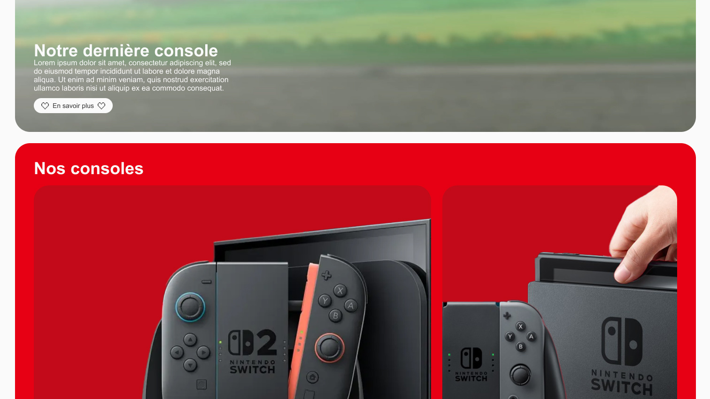
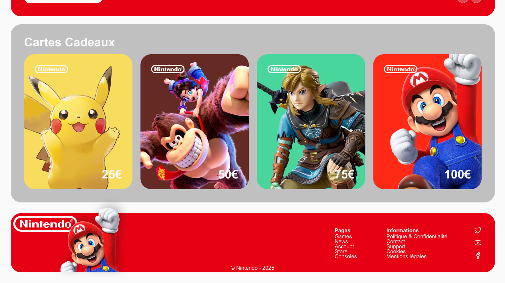
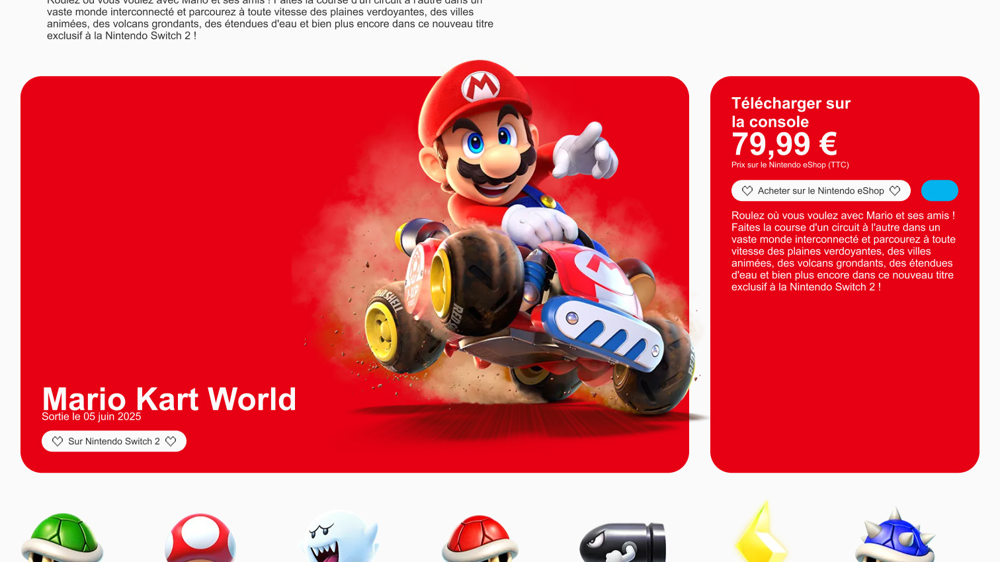
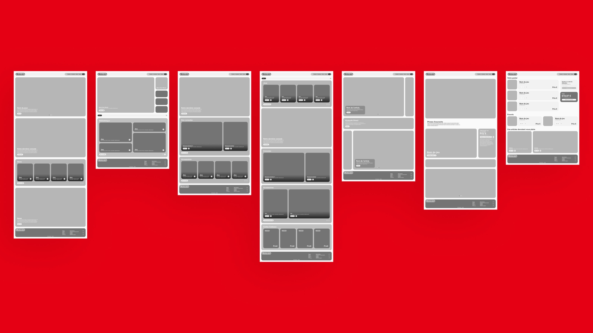

SCROLL
tanguy.studio
NINTENDO
Projet de refonte UX/UI Nintendo. Objectif : rendre l'offre lisible et accélérer l'accès aux actions principales sur desktop et mobile.
ACCÉDER AU PROTOTYPE



Contexte & objectifs
L'écosystème Nintendo réunit une offre riche, des profils utilisateurs variés et de nombreux points d'entrée. Le défi est de clarifier la navigation sans perdre l'identité visuelle forte de la marque.
Le travail s'est concentré sur la hiérarchie des contenus, les parcours prioritaires et l'unification des composants pour une expérience plus directe.

Travaillons ensemble
Tu as un projet UX/UI ? Parlons-en.